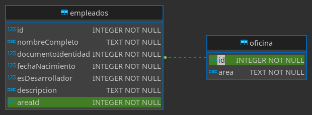

Base de datos
Elección de base de datos
Se ha elegido el tipo de base de datos sqlite3 por su sencillez para proyectos pequeños como este. Para proyectos donde se requiere por lo general mucho almacenamiento escogería MariaDB.
Diagrama Entidad Relación
Se ha creado dos tablas según lo requerido, una para los empleados y la segunda tabla para el área del sector que pertenece el empleado. En ambos casos las columnas id son Primary key, la columna esDesarrollador es de tipo entero debido a que sqlite3 soporta booleanos a través de valores enteros. En la tabla empleados la columna areaId es una Foreign key relacionada con el id de la tabla oficina.

Consultas SQL
Creación de la base de datos
CREATE TABLE "empleados" (
"id" INTEGER NOT NULL UNIQUE,
"nombreCompleto" TEXT NOT NULL,
"documentoIdentidad" INTEGER NOT NULL UNIQUE,
"fechaNacimiento" INTEGER NOT NULL,
"esDesarrollador" INTEGER NOT NULL,
"descripcion" TEXT NOT NULL,
"areaId" INTEGER NOT NULL,
FOREIGN KEY("areaId") REFERENCES "oficina"("id"),
PRIMARY KEY("id" AUTOINCREMENT)
);
CREATE TABLE "oficina" (
"id" INTEGER NOT NULL UNIQUE,
"area" TEXT NOT NULL,
PRIMARY KEY("id" AUTOINCREMENT)
);
Obtener datos de los empleados de la base de datos
La siguiente instrucción obtiene todos los empleados y el área a la cual pertenece.
SELECT
empleados.id, empleados.nombreCompleto, empleados.documentoIdentidad,
empleados.fechaNacimiento, empleados.esDesarrollador,
empleados.descripcion, oficina.areaFROM empleados
INNER JOIN oficina WHERE empleados.areaId = oficina.id
La siguiente instrucción obtiene todos los empleados y el área a la cual pertenece filtrando por su nombre.
SELECT
empleados.id, empleados.nombreCompleto, empleados.documentoIdentidad,
empleados.fechaNacimiento, empleados.esDesarrollador,
empleados.descripcion, oficina.area
FROM empleados INNER JOIN oficina
WHERE empleados.nombreCompleto like '%Nombre a buscar%'
AND empleados.areaId = oficina.id
Modificar de los empleados la base de datos
La siguiente instrucción de ejemplo agrega un empleado a la base de datos.
INSERT INTO "empleados"
("nombreCompleto", "documentoIdentidad", "fechaNacimiento",
"esDesarrollador", "descripcion", "areaId")
VALUES ('Agustín dos Santos', 123456789, 19920714,
'TRUE', 'Desarrollador frontend', 1);
La siguiente instrucción de ejemplo modifica un empleado mediante su número de identificación de la base de datos.
UPDATE "empleados" SET
"nombreCompleto" = "Federico dos Santos",
"documentoIdentidad" = '987654321',
"fechaNacimiento" = '19960906',
"esDesarrollador" = 'FALSE',
"descripcion" = "DataEntry",
"areaId" = '1'
WHERE empleados.id = 1
La siguiente instrucción de ejemplo elimina un empleado mediante su número de identificación de la base de datos.
DELETE FROM "empleados" WHERE id = 1;
Área de empleados
La siguiente instrucción de ejemplo obtiene la identifiación y el nombre todas las áreas disponible de la base de datos.
SELECT * FROM "oficina"
La siguiente instrucción de ejemplo añade un área a la tabla oficina de la base de datos.
INSERT INTO oficina("area") VALUES ('SS. Gestión de la movilidad')